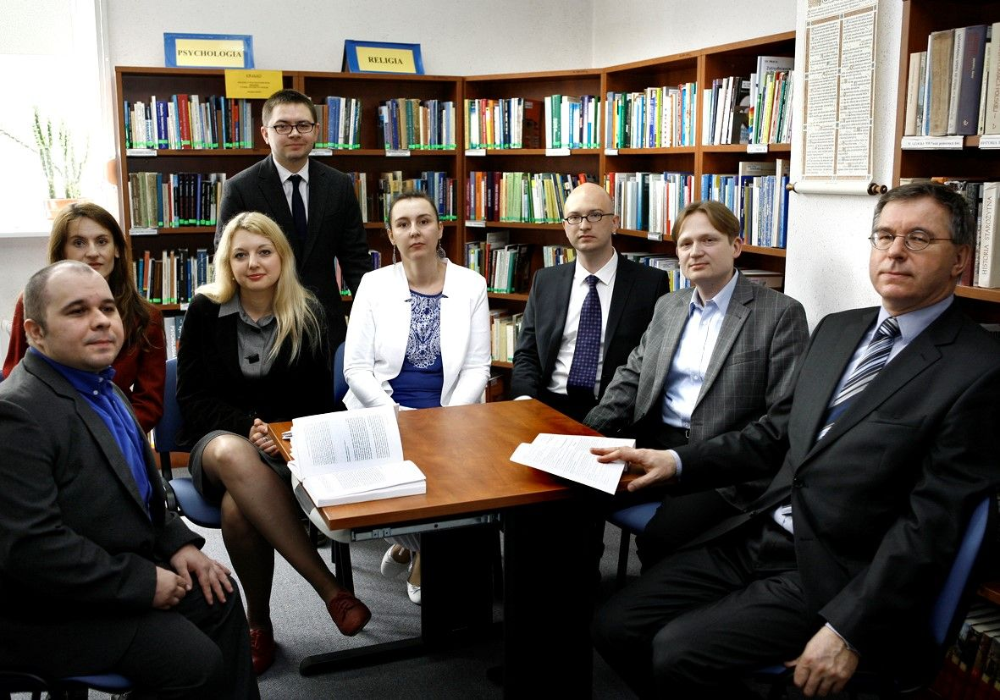
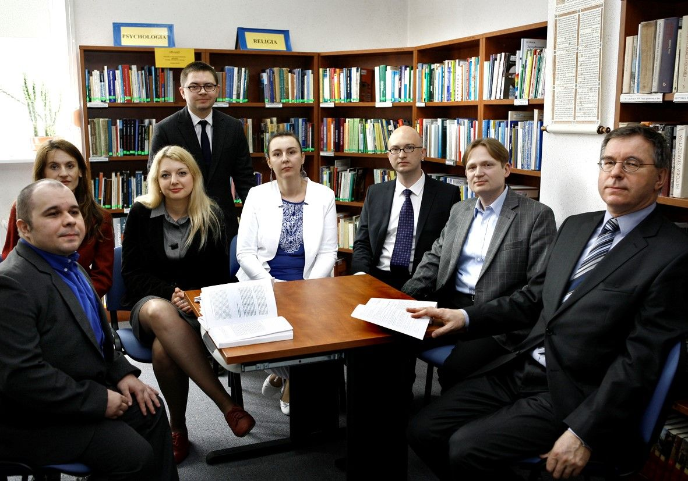
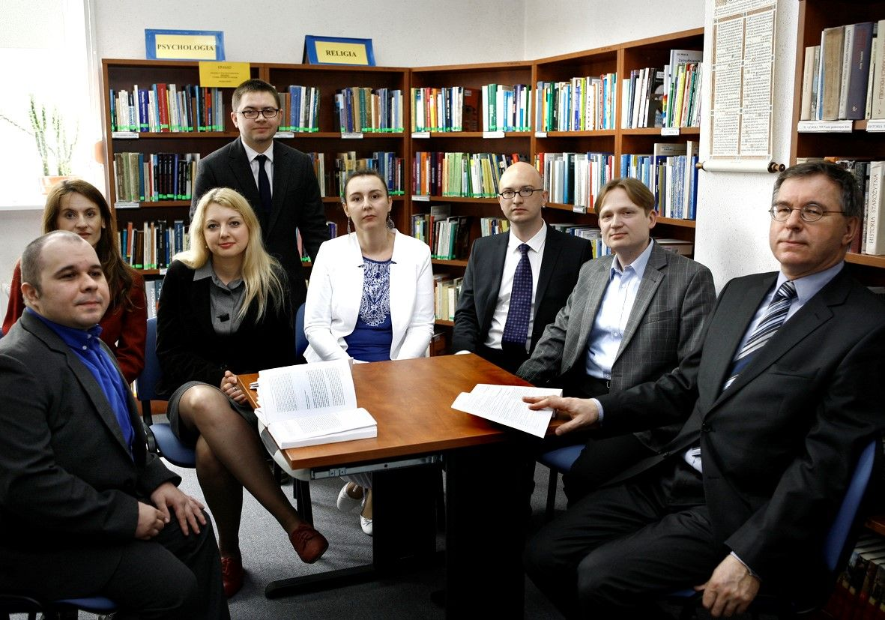

Witamy w galerii Instytutu Filozofii i Kognitywistyki
Oto archiwum zdjęć Instytutu Filozofii i Kognitywistyki Uniwersytetu Szczecińskiego.

Galeria
 



Oto archiwum zdjęć Instytutu Filozofii i Kognitywistyki Uniwersytetu Szczecińskiego.
